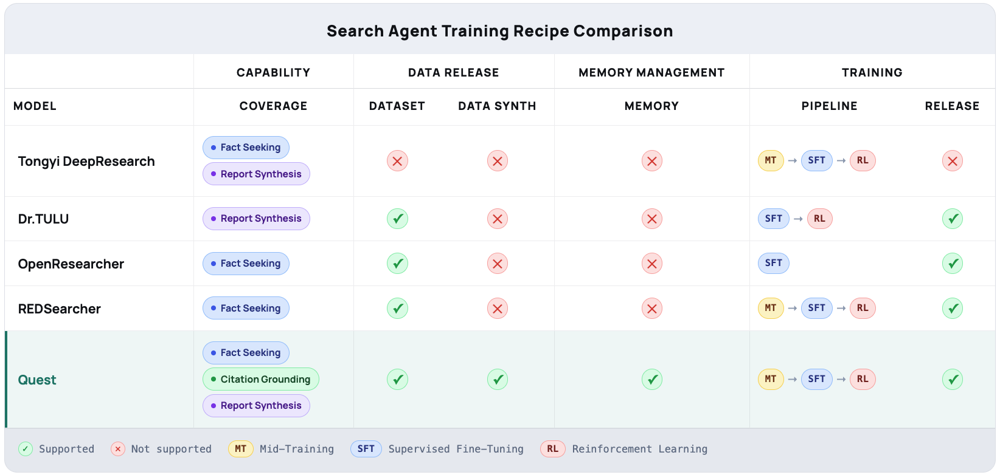

Quest: A Fully Open Recipe for Training Search Agents
Quest is a general-purpose agent designed to handle a wide range of search tasks, with strong capabilities in fact-seeking, claim grounding, and report synthesis. It covers the full recipe: synthetic data generation across diverse research scenarios, memory management for long-horizon reasoning, infrastructure for efficient and stable training, and a multi-stage pipeline spanning mid-training, SFT, and RL.
We release everything: model, data, and training scripts.

Search Tasks
Search is used across a wide range of real-world scenarios, and different scenarios impose fundamentally different expectations on what constitutes a good response. Search tasks span two regimes of correctness: those whose outputs can be grounded in externally verifiable evidence, and those whose outputs must be assessed through subjective judgment.
In objective settings, answers may be fixed or time-varying, and multiple responses can be valid as long as they are supported by verifiable sources. In contrast, open-ended tasks admit no ground truth; quality is evaluated along qualitative dimensions such as comprehensiveness, insight, and clarity.
| Benchmark | Fact-seeking | Citation grounding | Report synthesis |
|---|---|---|---|
| BrowseComp | ✓ | × | × |
| Mind2Web 2 | ✓ | ✓ | × |
| HLE | ✓ | × | × |
| DeepResearch Bench | × | ✓ | ✓ |
| LiveResearchBench | × | × | ✓ |
| GAIA | ✓ | × | × |
| BrowseComp-Plus | ✓ | × | × |
| WideSearch | ✓ | × | × |
Objective tasks
Within objective tasks, correctness often depends on multiple complementary capabilities rather than a single skill. One common requirement is fact-seeking, exemplified by BrowseComp, where the agent must locate a specific and often obscure piece of information through multi-hop web navigation.
Another important capability is citation-grounding, as seen in Mind2Web2, where the agent must support its claims with reliable, up-to-date, and verifiable citations. In practice, objective tasks often require both capabilities: an agent may need to retrieve precise information and support each claim with trustworthy cited evidence.
Open-ended tasks
Open-ended tasks require a further capability, report synthesis, as exemplified by DeepResearchBench. Given an open-ended task, the agent must synthesize information from diverse sources into a coherent, well-structured, and reader-friendly report.
Evaluation relies on rubric-based judgment rather than a single externally verifiable answer. Together, these capabilities define a broad profile for search agents: retrieving precise information, providing verifiable citations, and synthesizing knowledge into coherent, well-structured reports.
Quest is designed to handle all three.
Quest
Quest is equipped with a practical tool-use system that allows it to gather external information, browse webpages, perform precise computation, and access academic evidence during inference.
| Tool | Purpose |
|---|---|
| Search | Retrieves relevant online results for a query. |
| Visit | Reads a URL and returns content relevant to the current goal. |
| Python Interpreter | Runs sandboxed code for computation, data processing, and verification. |
| Google Scholar | Retrieves scholarly papers and publication metadata for research-oriented evidence. |
Smaller Versions
We also train smaller SFT-only variants to provide lightweight search agents for compute-constrained deployment scenarios. The 2B, 4B, and 9B models use the same agent interface and training format, allowing us to study how search capability scales under a fixed recipe.
Across objective, citation-grounded, and open-ended benchmarks, the smaller variants preserve the core behavior of Quest while exposing the expected tradeoff between model size and task performance. The results below report the average score for each benchmark, using a per-benchmark y-axis range to make close differences visible.
BrowseComp
avg@3
Mind2Web 2
avg@3
HLE
avg@3
DeepResearchBench
avg@3
LiveResearchBench
avg@3
GAIA
avg@3
BrowseComp-Plus
avg@3
WideSearch
Item F1 avg@4
The Effect of Mid-training and Reinforcement Learning
To trace how each training stage contributes, we evaluate the same 35B agent from the vanilla checkpoint through three training stages: SFT only, after adding mid-training (SFT+MT), and after the final reinforcement learning stage (SFT+MT+RL). Each panel below plots the score progression on one benchmark.
Mid-training yields consistent gains on several search-heavy and citation-grounded benchmarks, while keeping performance largely stable on tasks where the SFT-only model is already strong. Reinforcement learning further compounds these gains on tasks that reward iterative search and reasoning.
BrowseComp
avg@3
Mind2Web 2
avg@3
HLE
avg@3
DeepResearchBench
avg@3
LiveResearchBench
avg@3
GAIA
avg@3
BrowseComp-Plus
avg@3
WideSearch
Item F1 avg@4
Try Quest
Send a question to Quest HuggingFace Space. The first request may take 30–60 seconds while the Space wakes up.
Advanced settings
Data Synthesis

Training a Search Agent requires data that goes far beyond standard QA pairs. A question-answer pair alone does not tell the model what makes an answer correct, what evidence should support it, or how to distinguish between responses of varying quality. Quest builds such data from scratch through a structured synthesis pipeline tailored to both objective and open-ended tasks.
Central to our synthesis pipeline is the rubric tree: a hierarchical decomposition of the constraints an answer must satisfy. The rubric tree serves three roles simultaneously across both objective and open-ended tasks: it provides a unified evaluation framework, enables scalable data synthesis through composable constraints, and provides fine-grained reward signals for RL training.
Objective Tasks
For objective tasks, we construct training data through a scalable synthesis pipeline grounded in external web evidence. We first sample trending keywords from a pool crawled from Google Trends as topical seeds, ensuring that the resulting tasks remain both topically relevant and temporally diverse. For each keyword combination, a model browses the web, collects relevant information, and derives verifiable constraints from the retrieved content, which are then organized into a rubric tree following Mind2Web2.
All rubric trees undergo iterative refinement to ensure a correct tree structure and valid node definitions. Tasks whose rubric trees still cannot be resolved into a consistent, reliably evaluable structure are discarded. Once finalized, each rubric tree is translated into a dedicated Python evaluation script and a natural-language question.
Open-ended Tasks
For open-ended tasks, we sample keywords directly from Google Trends to produce open-ended research prompts. Each task is again paired with a rubric tree, though the structure here is partially fixed and partially adaptive. The second layer consists of four fixed dimensions shared across all tasks - instruction following, comprehensiveness, readability, and insight - while the third layer contains adaptive nodes tailored to the specific prompt.
To produce stable rubric weights, we run the weight generation three times and average across runs. For evaluation, we adopt a pairwise comparison strategy motivated by DeepResearchBench. For each task, a teacher model executes a full pass over the web, producing a reference report. A judge model then receives both the candidate report and the reference report simultaneously, allowing it to make finer-grained distinctions than independent scoring permits.
Node-level scores are aggregated into a weighted total for each report via the rubric tree, and the final score is defined as follows.
Here, \(r_{\mathrm{cand}}\) and \(r_{\mathrm{ref}}\) denote the candidate and reference reports, respectively, and \(J(\cdot)\) denotes the judge model's weighted rubric scoring function. The resulting score in \((0, 1)\) reflects the candidate report's share of total assessed quality, with scores above 0.5 indicating that the candidate has surpassed the teacher-generated reference.
The result is a dataset of task instructions paired with reference reports and structured rubrics, providing the supervision signal for SFT and the reward scaffold for RL.
Memory Management
A Search Agent does not complete a task in a single pass. It searches, reads, revisits, and revises - accumulating information across dozens of tool calls before arriving at a final answer. This creates a fundamental challenge: as the context window fills with raw search results, visited pages, and intermediate reasoning traces, the agent's ability to attend to what matters most begins to degrade.
Most existing open-source agents sidestep this problem by either capping the number of turns or relying on a sufficiently large context window to hold everything at once. Quest takes a different approach. Rather than expanding the context indefinitely, it adopts a structured memory management system that compresses history into a compact state, enabling the agent to reason over arbitrarily long horizons without context overflow.

Memory Condenser
When the agent's context usage approaches a threshold, a Memory Condenser is triggered. The condenser takes as input the full raw history - search queries and their results, visited URLs and extracted content, reasoning traces, and any previous summarized memory - and produces a structured JSON object we call the Memory State.
The Memory State organizes accumulated knowledge into three buckets. Trusted entries are verified facts paired with their source URLs. Untrusted entries are claims that have been contradicted by other sources, flagged with the reason for distrust. Uncertain entries represent partial evidence - claims the agent has encountered but not yet confirmed, each annotated with a specific follow-up action.
This three-bucket structure is not merely organizational. It encodes the agent's epistemic state at each point in the research trajectory, allowing the resumed agent to distinguish between what it knows, what it doubts, and what it still needs to find.
Resume Agent
Once memory has been condensed and the context cleared, a Resume Agent is initialized with a fresh context window. The Memory State is injected directly, giving the resumed agent immediate access to all verified knowledge without re-reading raw sources. Uncertain entries drive the next wave of search and verification actions, while untrusted entries are deprioritized.
Critically, the resumed agent never re-searches claims already marked as trusted, which avoids the redundant tool calls that inflate latency and cost in systems without structured memory. The result is an agent with effectively unbounded context: one that can sustain coherent, citation-grounded research across as many turns as a task requires.
Why Summary Instead of Discard-All or Keep-Last-N
A natural alternative to structured memory summarization is to simply discard old context once the window fills - either by clearing everything (discard-all) or by retaining only the most recent N turns (keep-last-N). While simple to implement, both strategies suffer from a fundamental limitation: they treat all historical information as equally disposable, with no mechanism to distinguish verified facts from speculative claims, or completed sub-goals from pending ones.
Discard-all resets the agent's epistemic state entirely, forcing it to re-discover facts it has already verified and re-visit sources it has already read. Keep-last-N mitigates this somewhat by preserving recent context, but remains blind to information that fell outside the retention window - even if that information is critical to the task.
While discard-all and keep-last-N may suffice at inference time for short-horizon benchmarks, they are inadequate as a training paradigm. The Memory State addresses this by compressing history into a structured epistemic snapshot rather than raw truncation: verified facts are carried forward explicitly, pending actions are preserved as concrete follow-up directives, and contradicted claims are flagged rather than silently dropped. This ensures that no verified knowledge is lost across compression boundaries, and that both training trajectories and inference rollouts remain coherent regardless of task length.
Infrastructure
Training a Search Agent at scale introduces infrastructure challenges that go beyond standard LLM fine-tuning. The agent must interact with live web content throughout data synthesis, SFT trajectory collection, and RL rollout - each of which involves hundreds of search queries and URL visits executed in parallel. Without careful infrastructure design, these external calls become the dominant bottleneck: expensive and difficult to reproduce.
Quest addresses this through a dual-cache system that intercepts all search and visit operations before they reach the live API.
Search Cache
Every search query first undergoes exact-match lookup against a persistent query cache. On a cache hit, results are returned immediately without an API call. On a miss, the query is passed to FAISS for semantic similarity search: if a sufficiently similar query already exists in the cache, its results are returned as a proxy. Only when both exact and semantic lookup fail does the system fall through to the live search API, at which point the result is written back to the cache for future use.
Visit Cache
URL visits follow a simpler exact-match policy. Each URL is checked against a persistent cache keyed by the full URL string. On a hit, the stored page content is returned directly. On a miss, the live page is fetched and cached. This eliminates redundant fetches of the same page across different training runs - a common source of waste in systems that regenerate trajectories from scratch.
What the dual-cache buys us
- Cost reduction. Repeated queries and URL visits across distillation, SFT, and RL rollout are served from cache rather than billed API calls.
- Scalability. Both caches support high-concurrency reads and writes, handling the parallel rollout scenarios that arise during RL training without contention.
- Reproducibility. Both cache databases are released alongside all other project resources, ensuring that training runs can be replicated exactly without dependence on live web state at reproduction time.
Fully Asynchronous RL Pipeline
Built on top of VERL's fully asynchronous policy optimization framework, Quest further extends the pipeline by making evaluation asynchronous as well. Beyond overlapping rollout and training, time-consuming task-specific evaluation is offloaded to reward-loop workers.
This matters for rubric-tree evaluation, which can require structured assessment across many criteria nodes. Once a trajectory is generated, the rollouter dispatches it for evaluation while the trainer continues consuming already scored samples from the queue. Evaluator timeout control and interruption-aware reward handling keep the pipeline stable during parameter synchronization.
Training
Quest trains the Search Agent through a three-stage pipeline: mid-training, supervised fine-tuning, and reinforcement learning. We apply this pipeline across two model scales, Qwen3.5-35B-A3B and Qwen3-30B-A3B, where the latter is included for fair comparison with prior work. We also train smaller SFT-only variants, including Qwen3.5-9B, Qwen3.5-4B, and Qwen3.5-2B, for compute-constrained deployment settings.
Mid-Training
Relevant Information Extraction
Given a raw HTML page and a research goal, the model is required to produce a goal-relevant summary that filters out navigation elements, advertisements, and off-topic content. This trains the model to attend selectively within long, noisy contexts - a prerequisite for effective web-based research.
Memory Summarization
Given a long history context, the model is required to produce a structured Memory State JSON. The summaries used as supervision targets are produced by a teacher model during data synthesis and reused here directly, ensuring that the model's output format remains consistent with what the Resume Agent expects to consume.
Both tasks require no additional data collection or human annotation: the relevant information extraction targets are derived directly from the Visit Tool, and the memory summarization targets are produced by the Memory Condenser throughout the pipeline.
Supervised Fine-Tuning
Rejection Sampling
For trajectories that succeed on the first attempt, we apply rejection sampling and retain only those with a perfect rubric score of 1 on objective tasks. For open-ended questions, we retain trajectories with a score of at least 0.475, indicating that the generated report is close to the quality of reference reports.
Reflection-based Retry
For trajectories that fail, rather than discarding them, we adopt a reflection-based retry strategy. The error cause identified by rubric evaluation is injected into the context as a hidden hint. The teacher model is then re-run on the augmented context, and if the corrected trajectory achieves a perfect score, it is included in the training set.
Inline Citation Format
To improve the readability and verifiability of generated reports, we standardize all outputs into an inline citation format, where each factual claim is directly annotated with the URL of its supporting source. For each trajectory, GPT-5-Mini is used to retrospectively insert inline citations into the original response, drawing on both the reasoning trace and the Memory State.
Session-level Training
After constructing full training trajectories in the SFT stage, we transform them into session-level training instances. A session is a contiguous segment of interaction between two consecutive memory condensation events, containing the current working context after the previous memory condenser up to, but not including, the next condensation step.
This aligns the training unit with the agent's effective working memory during inference and lets long trajectories be optimized without requiring the entire trajectory to reside in GPU memory at once.
Memory Efficiency
Decomposing trajectories into shorter sessions substantially reduces peak memory usage. In practice, this allows us to train on trajectories exceeding 200K tokens using only 16 H100 GPUs, which would be infeasible under standard trajectory-level training.
Unbounded Context Extrapolation at Inference Time
Session-level training decouples per-session training context length from overall trajectory length. Combined with memory management, this enables the agent to generalize to research sessions longer than those seen during training.
Reinforcement Learning
Rubric-tree Rewards
Each trajectory is evaluated against a hierarchical rubric associated with its task, producing a fine-grained measure of completion quality beyond binary correctness. For objective tasks, we use the original rubric-tree score. For open-ended tasks, we map the pairwise score into discrete reward levels to sharpen distinctions near the ambiguous middle region and stabilize optimization.
Fact-checking Rewards
We further incorporate a citation-level reward that verifies whether each inline citation is faithfully grounded in its referenced source. The raw citation score is computed as the fraction of supported citations among all non-unknown citations.
The two signals are combined into a single composite reward.
The minimum operator ensures that the citation reward is upper-bounded by the base score, preventing a response with high citation coverage but poor content from receiving an inflated reward.
Reward and Advantage Propagation
For each rollout, a scalar reward is computed from the final full response and propagated across all derived sessions. We adopt GRPO-style outcome-based advantage estimation without a learned critic, normalizing advantages within each rollout group.
When the memory condenser produces multiple sessions per rollout, these sessions are deduplicated during normalization so that all sessions derived from the same rollout share a single advantage value. For policy optimization, we use the standard GRPO objective.
| Stage | Type | #Task | #Trajectory | #Session |
|---|---|---|---|---|
| Mid-training | Memory Summarization | 309,346 | ||
| Mid-training | Relevant Info Extraction | 1,052,663 | ||
| SFT | Objective | 5,070 | 19,435 | 39,861 |
| SFT | Open-ended | 1,958 | 4,485 | 11,903 |
| RL | Objective | 864 | --- | --- |
| RL | Open-ended | 269 | --- | --- |
Unsuccessful Attempts
-
Search Result Prediction in Mid-training
Prior work has shown that search result prediction can be beneficial for search scenarios. In our experiments, this objective helps when used in isolation, especially on search-heavy tasks such as BrowseComp, but consistently degrades overall performance when combined with our other mid-training tasks. We suspect redundancy with memory-related objectives is the main cause.
-
Rubric-Based Error Identification in Mid-training
We introduced a mid-training task where the model is asked to predict potential issues in a given answer. In preliminary experiments, this objective yielded only marginal improvements. We hypothesize that the limitation stems from the lack of access to external evidence during this stage.
-
Direct Policy Optimization for Report Comparison
To improve long-form report generation, we explored a DPO objective based on pairwise report comparison. In practice, this did not yield improvements over SFT. Constructing reliable preference pairs incurs additional overhead, and training tends to be unstable and prone to overfitting, resulting in limited gains in final report quality.
-
Evaluation for Long-form Questions
Before arriving at our final scoring design, we tested two alternatives. Pointwise scoring suffered from severe score inflation and poor discrimination. Pairwise win-tie-lose scoring collapsed toward zero because our early models were consistently weaker than the teacher. These failure modes motivated the final pairwise scoring scheme used in Quest.
Closing Remarks
In this project, we explored the full pipeline for training a search agent from scratch, including data synthesis, training, infrastructure, and system design. We hope this work can serve as a strong starting point for future efforts to advance search agents. At the same time, our study reveals several promising directions that warrant further investigation.
-
Off-line Training
Our framework already maintains a large-scale cache of search results and website content. This raises the possibility of fully offline training, where agents learn from a fixed corpus of interactions without relying on expensive online API calls.
-
Integrated Rubric Tree
A promising direction is to develop an integrated rubric tree that can jointly capture both objective correctness and open-ended quality dimensions, providing hierarchical and compositional supervision within a single structured schema.
-
Multimodal Extension
Many real-world search scenarios involve webpages, tables, figures, and interactive GUIs rather than pure text. A natural next step is to extend search agents beyond text-only interaction and integrate them into GUI-based environments.
-
Self-integrated Memory Module
In our current framework, memory condensing is handled by an external model invoked at fixed context thresholds. A more principled direction is to integrate this capability directly into the agent itself so it can autonomously decide when and how to condense memory.
-
Curriculum Learning
Our current pipeline applies random shuffling during both SFT and RL training, treating all tasks uniformly regardless of difficulty. A difficulty-aware curriculum could accelerate convergence, improve sample efficiency, and help the agent develop stronger reasoning strategies.
We will continue to develop Quest to pave the way for truly autonomous intellectual agents. This is, after all, our Quest.
Contribution Statement
- Core Contributors
- Jian Xie, Tianhe Lin, Zilu Wang
- Contributors
- Yuting Ning, Zhehao Zhang, Yuekun Yao, Tianci Xue, Kai Zhang, Zhongyang Li, Yufan Wu, Shijie Chen, Boyu Gou, Mingzhe Han
- Advisors
- Yu Su, Huan Sun